第一章：金融工具导论（Introduction to the Instruments）
Understanding a theory means understanding it as an attempt to solve a certain problem. —— Karl Popper
导读：本章要解决的问题
Taleb 开篇引 Popper 这句话，用意很实在。一个金融工程出身的读者通常已经能熟练写出 Black-Scholes-Merton（下称 BSM）公式、推导各阶希腊字母、在风险中性测度下做定价。本章要处理的是公式之外、却决定盈亏的那部分问题：当一个交易员面对任意一张衍生品合约时，他应该用什么框架在几秒钟内识别出它的真实风险，判断能否复制、复制误差会在哪里爆炸。
把全章压缩成四句话：
- 衍生品的交易意义在于它是标的价格、时间、波动率、利率与流动性的函数；分类应当服务于对冲，而非套用法律形式或教科书目录。
- 线性产品可以静态锁定，非线性产品必须动态对冲，这是全书的分水岭。
- 任何非线性都会"污染"周围的状态，从而产生时间价值，也必然产生时间衰减。convexity、time value、time decay 是同一枚硬币的三个面。
- 风险管理必须先把工具分解成可交易、可对冲、可标记的构件，再区分主要风险与次要风险，并始终把流动性放在脑后。
作为读者，本章真正的价值在于建立一组理论↔实务的映射：Taleb 的每一条"交易员经验法则"，几乎都能在我们已经掌握的定价理论里找到对应的数学命题。下面的笔记会沿着原文的叙述顺序展开，并在每个节点把这层映射补全。
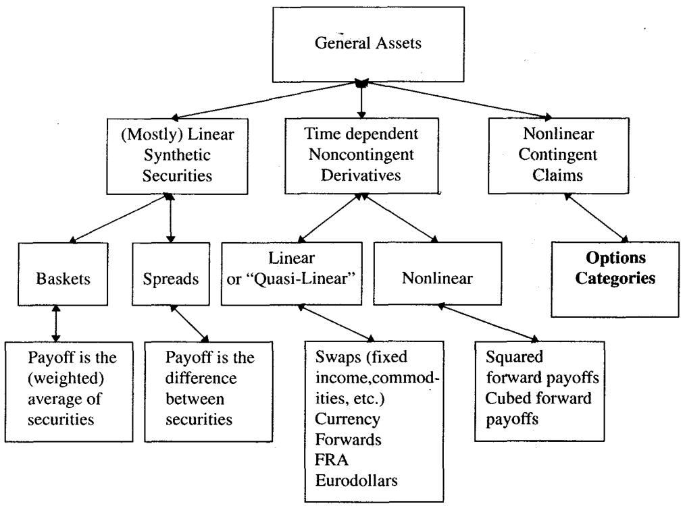
图 1.1 的分类图可以看作全书地图。远期、期货、互换、香草期权、奇异期权摆在一起，不该被读成一份并列的名词清单。它们其实落在同一条连续谱上：从线性到非线性、从静态复制到动态复制、从显性选择权到隐性选择权。阅读时应把每个工具放到这条谱上，而非塞进某个抽屉。
一、衍生品的第一性分类：线性 vs 非线性
衍生品（derivative）是价值最终依赖于另一资产（标的，underlying）价格的证券。Taleb 认为最有交易意义的第一层切分，落在**线性（linear）与非线性（nonlinear）**之间，而非场内/场外或期货/期权这些常见的二分。
判据极其简洁：看价值函数对某个参数的二阶（偏）导数是否为零。线性衍生品满足
非线性衍生品则有
交易员把这个二阶导数叫 gamma，更一般地叫 convexity（凸性）。一张产品只要在某个参数方向上有非零二阶导数，就属于"在那个方向上非线性"。Taleb 随即给出本章第一条、也是贯穿全书的风险管理规则：
所有非线性衍生品的价格都依赖时间（time-dependent）。
从定价理论看，这句话与其当成经验断言，不如读作 BSM 偏微分方程的直接推论。把价值函数的各阶导数写成希腊字母，无套利定价要求
只要 ，方程就强制 （在 drift/利率项给定的前提下）。换句话说，曲率项一旦出现，时间项就不可能为零。这就是"非线性 ⇒ 时间依赖"的数学根。它也立刻给出 Taleb 反复强调的"租金"直觉：
long gamma 必然 short theta（持有凸性要付租金），short gamma 必然 long theta（卖出凸性收租金但承担再平衡与跳变损失）。这无关市场公平与否，它是无套利约束下的必然结果，也正是动态复制成本的体现。
线性工具：交易员只管 delta 和融资
线性工具只有 delta，没有曲率。一张远期合约的价值近似为
对现货的 delta 近似为 1，gamma 为 0。交易员用标的或同到期远期就能把方向风险"基本"锁死，不需要持续调仓。这里的"基本"很关键：Taleb 后文不断提醒，现实中几乎不存在绝对线性，融资、保证金、交割规则、信用和流动性会把看似干净的线性工具悄悄变成**准线性（quasi-linear）**工具。
非线性工具：delta 会移动，工作变成复制路径
非线性工具的 delta 随状态移动。一张看涨期权在深度虚值时 delta 趋近 0，平值附近 delta 变化最快（gamma 峰值），深度实值时 delta 趋近 1。所以交易员的真实工作并不停在"我买了一个 call"这句话上，而是要不断回答一串动态问题：现货上移一个点后我要补多少标的？曲面移动后原来的 delta 还可信吗？临近到期 gamma 是否集中到了某个 strike？如果市场跳过了我的再平衡区间，theta 收入能否补偿 gamma 损失？
Taleb 的实务视角由此定型：对非线性产品，终值损益图只是表面，真正要盯的是复制路径。终值图人人会画，复制路径里才藏着钱和风险。
二、希腊字母：从模型偏导到交易动作
本章先给出 Part I 用得到的希腊字母基本定义。定义本身不必赘述，值得留意的是 Taleb 赋予它们的交易语义。在他笔下，希腊字母是库存管理指标，而非模型输出的装饰数字。
| Greek | 数学定义 | 交易语义（Taleb 视角） |
|---|---|---|
| Delta | 方向头寸：当前要买卖多少标的 | |
| Gamma | 对冲头寸的变化速度：决定再平衡压力与频率 | |
| Vega | 波动率头寸：曲面移动带来的 P/L | |
| Theta | 时间流逝带来的价格变化（资产按风险中性增长） | 持有凸性的"租金"或卖出凸性的"收入" |
| Rho | （含股息/carry） | 融资、远期价格与提前行权的入口 |
"long gamma / long vega"指对该参数的正敏感度：参数上升时 P/L 改善。一位只看名义本金而不看希腊字母的风险经理，等于只看仓库面积而不管里面装的是现金还是易燃品。
对冲者视角：用户看终值，制造商看复制
Taleb 要求全书从 hedger 的视角看衍生品，并把市场参与者分成两类：
- 用户（user）：通常关心到期支付、保护、收益增强或会计结果，效用建立在终值上。
- 制造商（manufacturer）：做市商、结构产品发行方、期权台，关心复制成本和动态对冲。
同一张 put，对用户是保险，对交易台是"卖 gamma、收 theta、承担跳空与流动性风险"。两者效用函数不同，连结果都不同。
一个尤其重要的论断：动态对冲者并不在乎自己名义上持有的是 put 还是 call。 因为一阶对冲之后，同一 strike、同一到期的 put 与 call 通过 put-call parity 互相转化，真正决定风险形态的是 strike 和 expiration，由它们决定 gamma 集中在哪个价位、在什么时间集中。这正是后面"期权代数"的伏笔，也提醒我们：在风险系统里盯着"是 call 还是 put"往往是浪费注意力，应该盯 strike/expiry 的网格。
三、线性、凸性、凹性与混合曲率
本章用 Jensen 型不等式给出三种曲率的严格定义。给定 ，若
则在 之间线性；若
则为凸（convex）；不等号反向则为凹（concave）。
对熟悉测度论的读者，这就是 Jensen 不等式的两面：凸函数下 。期权价值之所以高于其"按远期估的内在价值"，正是因为支付函数 是凸的，而凸性在不确定性下产生正的期望增量，这就是时间价值的来源，也是"波动率有价"的几何表述。Taleb 把它讲成"convexity 要收费"，本质是同一件事。
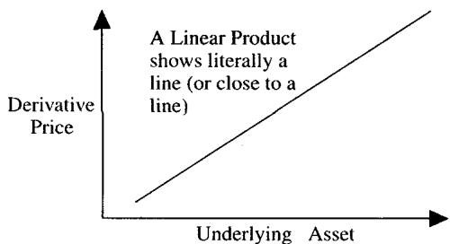
图 1.2A：线性证券的价值曲线是一条直线，交易员只管 delta 和融资。
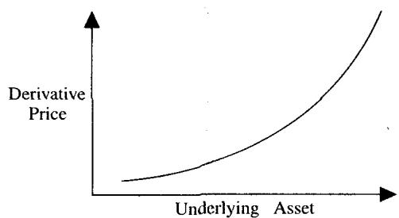
图 1.2B：凸性证券。long convexity 的交易员喜欢市场动起来，价格上下波动都可能通过再平衡产生收益（gamma scalping），代价是支付 theta。
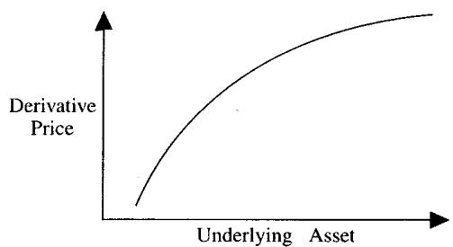
图 1.2C：凹性证券。short convexity 的交易员每天看似收 theta，但市场一旦远离中心，亏损会加速，这正是 Taleb 后来反复刻画的"在压路机前捡硬币"。
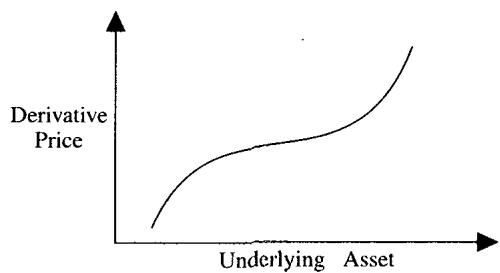
图 1.2D：混合非线性。很多真实结构在不同价格区间呈现不同曲率，并不维持全局凸或全局凹。LIBOR-square、障碍期权、带敲入敲出的结构都属于这一类，它们的 gamma 会变号。
"准线性"最容易误导
Taleb 提醒：很多工具在平静期看似线性，只有遇到"火的考验"（the test of fire）才暴露非线性。这是非常交易化的洞见，风险往往不在日常小波动里成形，而在极端路径、流动性缺口和模型边界上现身。值得高度警惕的准线性头寸包括：带强制平仓条款的融资交易、保本结构里内嵌的隐含期权、期货与远期因保证金再投资产生的凸性差异、以及被营销成"收益增强"的短波动率结构化票据。它们平时像直线，压力下像短期权。换句话说，用历史小样本拟合出的"线性"敞口，在尾部会失效，因为真正的二阶项只在大移动里显形。
四、合成证券：盯住风险结构，别被名字带走
合成证券（synthetic security）是两个或多个基础工具的线性组合。最典型的是篮子（basket）：股指合约可以由成分股按权重精确复制（SP500 即成分股的加权平均），ECU 是另一例。
关键的实务提醒是看公式而不是看名字。如果加权是算术平均，篮子通常接近线性；一旦是几何平均或带非线性规则，就会凭空生出凸性。Taleb 举例：在 FINEX 交易的美元指数因几何平均而带有 convexity，因而会相对底层证券溢价交易；这种凸性会让一个"中性"的人从任一方向的市场移动中获益，使套利的某一边更有吸引力。换个角度看，这就是 Jensen 不等式在指数构造里的体现：几何平均 算术平均，差额就是那点 convexity，而"华尔街很少给免费午餐"，它会被定价。
Thales 的"第一笔衍生品交易"
Taleb 引用 Aristotle 在《政治学》里记载的 Thales：预期橄榄丰收，他没有去买卖橄榄（那要做空、承担库存与价格风险），而是给 Miletus 周边的橄榄榨油机交了定金，锁定未来使用权；需求上升时再转租获利，判断错则只损失定金。
这是一笔教科书级的期权交易：标的是榨油机产能（一种生产瓶颈资产），而非橄榄本身，定金就是权利金，收益来自未来租金上行，下行损失被定金封顶。Taleb 借此说明，交易技能的核心除了预测方向，更在于选择正确的支付结构，即用有限损失、清晰杠杆的看涨结构去表达观点。他还顺手点出"MIT-smart 与 Brooklyn-smart"的分野：会算和会赚是两件事，这条线在公元前五世纪的小亚细亚就已存在。注意 Taleb 的细节：这其实是"期权写在期货上"的二阶衍生品（an option on a future）。
Elevator Bank 的篮子票据
Taleb 用虚构的 Elevator Bank 发行"所有篮子之母"票据来讽刺结构产品营销。官方理由是篮子能跟踪通胀或某指标；真正原因是篮子波动率低于成分波动率之和，看起来更好对冲。
交易员应从三个角度读它：银行卖的是客户听得懂的经济故事，管理的却是自己能对冲的风险块；篮子低波动不等于无风险，相关性一旦上升，分散效应消失、风险会突然集中；若篮子公式偏离简单线性平均，产品还会带不显眼的 convexity。这就是 Taleb 反复强调的"制造商视角"：结构产品的名字服务于销售，风险结构才服务于交易。
五、时间依赖型线性衍生品
时间依赖型线性衍生品（time-dependent linear derivatives）是通过时间维度与原资产分离出来的工具，主要包括：
- 远期（forwards）：未来交换某项资产或现金流。
- 远期利率协议（FRA）、Eurodollars：可视为从 到 的 forward-forward，并拆成条带（strips）。
- 互换（swaps）：无论终端用途如何，都可拆解为 Eurodollar 或 FRA 的组合。
Taleb 认为互换的二阶导数对标的价格等于（或接近）零，是线性或准线性工具；它的复杂性主要来自细节繁多，而非曲率：日计数规则、交割惯例、360/365 天基准、曲线插值、期货价格与其融资的相关性。交易员栽跟头，通常不在公式本身，而在忽略这些细节如何进入 P/L。两点之间如何插值、时间如何作用其上，才是真正的难点。
六、污染原理：动态对冲的根
Taleb 称污染原理（contamination principle）是期权对冲与交易中最重要的概念，是动态对冲的基本原理。它的直觉是：如果时间和空间中存在某个点能带来利润，那么它周围的区域也必须反映这种影响。价格像热量一样从支付点向四周扩散。
若资产价格逼近一个能给组合带来可观利润的水平，那么该水平周围的区域也应当产生一点点利润。
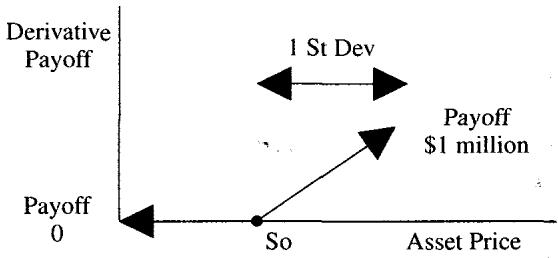
设想一张衍生品：某市场事件发生时支付 100 万美元，从给定起点出发，它在右侧某节点 支付。Taleb 的问题是：在起点 处，这张证券会值 0 吗？显然不会。只要一次标准差的移动可能触及 ，就有正概率拿到那 100 万，今天的价值就必然大于零。
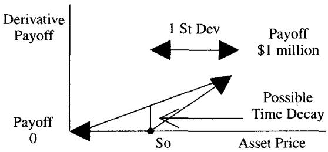
任何有经验的交易员看到这个支付和它的概率，都会愿意买入。于是价值大于零，时间价值由此成形。这部分价值不来自内在价值，而来自概率加权后的动态复制价值。
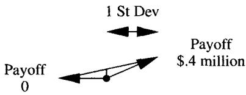
但时间价值意味着时间衰减。其他条件不变，随着时间流逝、触及支付点的概率下降，各标准差处的时间价值随之收缩，这就是 theta 的直觉来源。
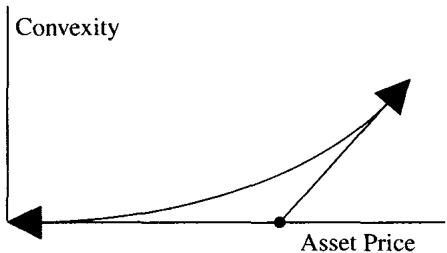
当这些离散的支付节点彼此拉开、连成一条连续曲线时，凸性就形成了。这张图说明了期权"为什么有 convexity"。Taleb 在脚注里解释了"污染"一词的由来：一个期权的价格会"污染"它周围的期权；当一个期权变贵，周围的也必须跟上；同理，若某个 Arrow-Debreu 价格上升，周围的也要上升，它们彼此污染。
理论映射：污染就是 Feynman-Kac 与热传导
这一节是把 BSM 的解析结构翻译成交易语言。污染原理的两个数学身份是：
其一，无套利定价 = 风险中性期望。 起点价值就是
只要期望支付为正，价值就为正。"污染"不过是说：条件期望对初始状态 连续依赖，离支付点越近、转移概率越大、现值越高。Arrow-Debreu 证券的价格
正是状态价格密度，它向邻域的扩散就是污染。
其二，BSM 方程就是热传导方程。 期权价值满足
经 、时间反演与贴现变换后可化为标准热方程 。Feynman-Kac 定理保证这个抛物型 PDE 的解就是上面的风险中性期望。Taleb 把它类比成"热源附近温度升高"，这个类比并不松散：抛物型方程的瞬时光滑化（infinite propagation speed）正是污染的数学内核，终值的奇点（ 的折点）会立刻把价值"抹"到整个定义域，并在折点附近留下最大的曲率（gamma）。
对交易技能的启发
污染原理解释了为什么交易员不能只盯当前内在价值。一个平值附近、没有内在价值的期权可能非常贵，因为邻域被终值支付污染；一个还没触碰障碍的障碍期权也可能突然变得极其敏感，因为障碍邻域被敲入/敲出事件污染。实务上这表现为：临近 strike 时 gamma 上升；临近 barrier 时 delta、gamma 与流动性风险同时上升；临近到期时 pin risk 与跳变风险压倒常规希腊字母；深度虚值的 wing 在平静期便宜，却会在危机中污染整条波动率曲面。后面所有奇异期权的风险图，本质上都是"污染从哪里来、扩散到哪里去"的问题。
七、非或有的非线性工具：LIBOR-square
Taleb 在此做了一个很重要的概念区分：非线性不等于期权。 有曲率的东西未必都是或有权益。LIBOR-square 就是非或有（noncontingent）、时间依赖、非线性的典型：双方都被义务约束去交换现金流，没有任何一方握有"选择权"，但支付函数里带平方项，于是产生了曲率。它的怪异之处在于：通常一侧凸、另一侧凹，一边正支付的加速被另一边负支付的加速所抵消。
合约支付可写为
其 delta 为
其 gamma 为
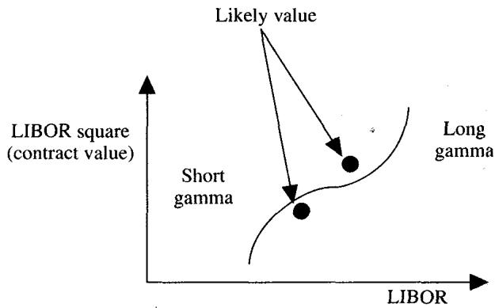
图中是典型的混合曲率：在 之上 long gamma，在 之下 short gamma，在原点处 gamma 为零（既不凸也不凹）。污染原理要求其估值线在 long gamma 区高于线性插值、在 short gamma 区低于线性插值。Taleb 还提到更夸张的 LIBOR-cube，会有三阶导数（曲率的曲率），但市场未必买账。
Elevator Bank 的 LIBOR-square 票据
案例是 Elevator Bank 向辛辛那提周边、被低利率压得焦虑的客户卖一种票据：利率进一步下行时，客户得到利率变动平方形式的加速补偿。它看起来像期权，又显得难以对冲，于是卖得高于"公平价值"。
这个案例体现了结构产品台的三项技能：识别客户需求（怕利率继续下行）、设计非线性支付（平方让保护"看起来"更强）、判断对冲的真实难度。Taleb 的批判点很锋利，复杂性本身经常被货币化：客户买的是安心和叙事，交易台卖的是可分解的风险，差额就是结构利润。
八、期权与或有权益
期权的价值取决于或有事件，它使期权区别于其他产品：对一方是潜在资产，对另一方是潜在负债。这种或有性使期权服从概率论，所有期权定价归根到底都是在处理概率。
put 是在某时间框架内以行权价（strike）卖出某工具的权利；call 是买入的权利。看涨期权到期支付
看跌期权到期支付
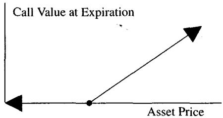
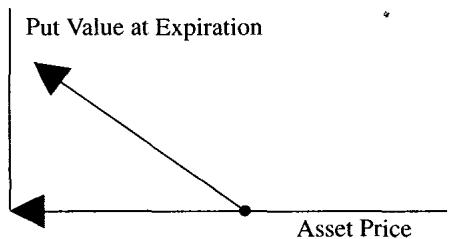
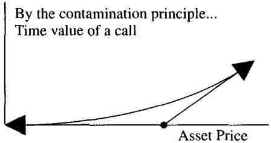
图 1.3 给出判断"一个工具是不是期权"的直觉测试：看支付是否不对称、是否存在 strike 这样的临界点。
关于内在价值，Taleb 有一个值得记住的约定：对欧式期权，交易员习惯把内在价值定义为 strike 与对应远期（forward）之差，而非与现货之差。因为欧式不会提前行权，唯一相关的价格是到期日交割的远期价。这条约定后面在 put-call parity、镜像规则里会反复用到，可以说欧式期权的世界以远期为坐标原点。
Put 与 call 取决于计价单位（numeraire）
Taleb 特别提醒：put 和 call 并非绝对概念，取决于 numeraire。"卖马克买美元"的 Mark/Dollar put，同时就是 Dollar/Mark call；收益率（yield）上的 put 是债券价格上的 call（某交易所定义了一个"收益率合约"因而发明了一种资产，而多数现券按价格交易，由此带来混淆）。一个更微妙的延伸：对以 SP500 为损益单位的指数基金经理，SP500 call 也可以理解为对现金（cash）的 put。
这背后是**计价单位变换（change of numeraire）**的金融直觉，远不止文字游戏。在外汇里，国内/国外两种风险中性测度互为 numeraire 变换，一边的 call 就是另一边的 put；put-call 对称在对称分布下成立。交易员若在换 numeraire 时弄错方向，就会把保护买反，外汇、债券、通胀期权尤其容易出错。你用什么资产记 P/L，就决定了哪个方向是上行。
期权是"半个远期"
Taleb 的一个直觉说法：期权像半个远期/期货。多头分享 strike 以上的上行，空头承担相应下行并收取权利金。由此 long put + short call 复制 short forward，long call + short put 复制 long forward（初期先忽略提前行权问题）。
这就是 put-call parity 的交易直觉版：看到 put 和 call，立刻想到它们可以通过远期互相转换，之后真正管理的是 strike、到期、forward delta 与融资。
CEO 也是期权持有人
Taleb 把 optionality 拉出交易所：CEO 凭其职位天然持有一个期权。公司表现达标就分享上行拿奖金，行业下行甚至公司破产，他的损失通常止于丢掉工作，不会被要求带支票本去见董事会。股东相当于把一个看涨期权（strike 是业绩门槛）送给了经理人。代理问题、奖金制度、有限责任，本质上都让某些人 long convexity、另一些人 short convexity。识别"谁 long、谁 short 这个隐含期权"，是看懂很多商业与合约结构的钥匙。
九、硬期权性与软期权性
optionality 是交易员描述支付非线性的宽泛词，常用于凸性工具，或像"止损单"、市场中已知挂单这类情形。作为污染原理的延伸：任何带 optionality 的东西都必须以溢价交易，且必然有时间衰减（因为事件概率测度随时间收窄）。
Taleb 区分两种：
- 硬期权性（hard optionality）：合约有明确 strike。gamma 更集中，临近 strike/barrier 时风险更尖锐。
- 软期权性（soft optionality）：合约内嵌凸性但没有真正的 strike。希腊字母通常更温和，时间上更稳定。
实务谱系：标准 call/put 是硬期权性；止损单、可赎回债券、带触发机制的融资协议介于硬与软之间；几何平均篮子、期货保证金再投资效应是软期权性。Taleb 的核心立场：只要存在 optionality，就不可能免费，它要么体现为显性期权费，要么体现为收益率折价、保证金条款、流动性让价或复杂产品利润。
十、期权等价规则：交易员的 option algebra
Taleb 把 put-call parity 称为交易员的"期权代数"。欧式期权在同 strike、同到期、有流动远期的前提下满足
由此可做最简单的代数：
含义是：同 strike、同到期下，call、put 与 forward 三者可互相转换。Taleb 也给了边界条件：软美式期权下规则仍近似成立但等价更弱；硬美式期权下规则会变滑，对非专业者甚至建议直接忽略 parity。
上市期权存在 "pin risk"（第 13 章），会使 put-call parity 在到期时失效。
102 strike 的 parity 数值案例
设 3 个月 102 put 报价 1.975，102 call 报价 2.9625，对应到期日的 forward 报 101.00，融资 5%。到期时 call 的融资成本约 ，put 约 0.0375。到期损益如下：
| 资产价格 | 102 Call P/L | Forward P/L | 102 Put P/L | Forward + Put |
|---|---|---|---|---|
| 106 | 2 | 5 | -3 | 2 |
| 105 | 1 | 4 | -3 | 1 |
| 104 | 0 | 3 | -3 | 0 |
| 103 | -1 | 2 | -3 | -1 |
| 102 | -2 | 1 | -3 | -2 |
| 101 | -2 | 0 | -2 | -2 |
| 100 | -2 | -1 | -1 | -2 |
| 99 | -2 | -2 | 0 | -2 |
| 98 | -2 | -3 | 1 | -2 |
| 97 | -2 | -4 | 2 | -2 |
表 1.1 的要点（也是无套利的实务表述）：若两组交易在所有到期价格状态下损益完全相同、且到期相同，则它们在整个存续期内必有相同的风险与损益轮廓。 否则就存在套利，或者你的模型输入错了。这正是"由终值唯一性反推过程唯一性"的静态复制思想。
镜像规则（Mirror Image Rule）
镜像规则：
期权须同 strike、同到期。验证很简单：一个 forward delta 为 30% 的 put，
所以同 strike 的 call forward delta 为 70%。
这里用的是 forward delta。欧式期权应当用同到期远期对冲；用现货只是机械替代。然而多数商用风险系统披露的是 spot delta（连同经典 BSM 公式），常常误导交易员。交易员因远期流动性不足而临时用现货做短期对冲是常见做法，但这会让人忘记 put-call parity 成立的精确条件。
这点提示一个常被忽视的细节：现货 delta 与远期 delta 差一个持有成本因子（ 或 量级的折算）。所谓 forward delta 就是"与标的同交割日的等价现金头寸"；用它做 parity 才严格闭合。美式期权的 forward delta 久期不确定（即所谓 omega），太不稳定，不适合用来做精确等价。
跨式、蝶式、Condor 的等价
若 put 的 forward delta 为 30%，跨式（straddle）可写为
即两个 delta 中性的 put 等于两个 delta 中性的 call。由此可推：利率不变时，call calendar spread 与 put calendar spread 轮廓相同；98/100/102 的 call butterfly 与 put butterfly 价格相同：
而 98-100-102 的 condor（long 98 put、long 102 call、short 100 straddle）经代数化简也等于同一个 put butterfly。
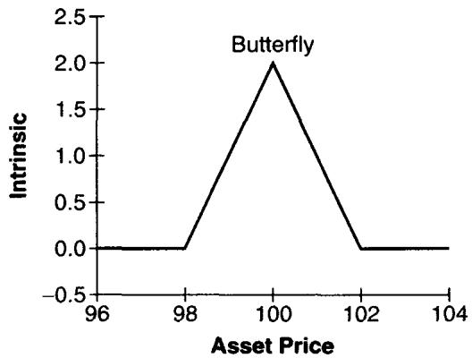
图 1.4 说明若干名字不同的组合产生同一条蝶式损益线。交易技能就在于看穿名字差异：客户说要 call butterfly、put butterfly 还是 condor，交易台最终管理的可能是同一组 gamma 和 vega。
一个重要推论（也是波动率曲面的基石）：同 strike 的虚值 put 与对应实值 call 的隐含波动率理论上应当相等。 这直接来自 parity，若两者波动率不同，就能在不承担方向风险的情况下套利。但 Taleb 提醒：这个结论对美式期权、提前行权、smile 曲面和流动性约束会变得脆弱（见下一节的反例）。
永远不要把 put-call parity 规则跨 strike 使用。等价只在同 strike、同到期、同标的、同结算条件下成立。软美式期权可有限度使用这些规则，但当期权 delta 变得过高时不行。
十一、美式期权、提前行权与那些麻烦（进阶）
美式期权比欧式难，因为标的的路径会导致可能的提前行权。欧式定价简单：把到期支付贴现即可。美式的复杂性在于提前行权时点本身不确定，行权规则依赖时间和内在价值的多少，于是难以建模。
从理论侧看，这正是最优停时（optimal stopping）/ 自由边界问题。美式期权价值是
它满足一个带早期行权边界的变分不等式（LCP）。Taleb 略过这套机器，直接把"何时该停"翻译成两条交易员能在脑子里跑的过滤规则：软规则与硬规则。
软美式期权（soft / pseudo-European）
软美式期权只从内在价值融资的角度考虑提前行权，也就是说，只有一个利率（影响持有人权利金/内在价值融资的那个）进入行权决策。它的行为基本等同欧式，只有在利率相对波动率很高、且深度实值时才不同。判据：当整张期权价值低于"从现在到到期的资金时间价值"时，应提前行权。
例：资产 100，年化利率 6%，波动率 15.7%，3 个月 80 call（美式）约值 20。不提前行权的机会成本是这 20 元权利金被占用 3 个月的融资：
而对应 put 的时间价值由 parity 接近于零。于是理性操作者可以把 call 换成"标的 + put"来以更优成本复制原结构，最终持有 long put + long 标的，省下那 0.30 的资金占用。交易直觉：深度实值软美式 call 的提前行权测试，本质是比较剩余时间价值与资金占用成本；剩余 optionality 低、资金成本高时，行权合理。
硬美式期权（hard）
硬美式期权同时受两类因素影响：内在价值的融资成本，以及持有标的到名义到期日的 carry 成本/收益。也就是两个利率进入决策：权利金的融资利率，和标的的持有利率。
Taleb 的货币例子：同样的深度实值 call，但标的是年息 20% 的外币，本币利率 6%。提前行权后，交易员不仅省下融资内在价值的钱，还能持有高息外币、以低息本币做空，净赚约 14% 利差。面值 100、90 天的额外收益近似
再加上提前拿到现金的 0.30，提前行权的吸引力远高于软美式情形，这张 call 也许早就该行权了。反过来，高息货币上的深度实值 put 通常不应提前行权（120 put、20 内在价值），因为提前建立等价空头要付约 3.5 的 carry，扣掉 0.30 的权利金融资收益仍不划算，于是它实际上被当作欧式工具对待。
这些硬提前行权规则推广到：正 carry 债券（call 在融资便宜于收益时可早行权，put 类似但不完全等于欧式）、负 carry 债券（反之）、股票（已知股息且负 carry 时 call 像欧式，除息前 call 可能行权）。
期权存续期内参数并不冻结：不付息股票可能开始付息、利率可能变动、利差可能反转。这些都会改变美式期权的未来价值。
期货期权因每日盯市，资金占用差异很小，因此一般归入软规则、当作欧式处理；只有深度实值时欧美差异才变得相关。
简单性规则（the Simplicity Rule）
市场总是流向简单。
复杂产品的监控与生产成本都更高；新奇合约初期吸引眼球，但新鲜感消退后，需求会转向最便宜、最直接的保护方式。这条规则解释了上市合约为何能长存（标准化、可替代、流动性集中、清算清晰），也解释了欧式期权在外汇里占据近 99% 成交量的原因。对交易台，复杂性分两种：有价值的复杂性（表达客户真实、无法用简单工具复制的风险）与昂贵的复杂性（只是把简单风险包装得难懂）。Taleb 看重前者，对后者保持警惕。
提前行权测试的陷阱与 1987 年的教训
Taleb 对机械的提前行权测试极不信任。多数风险系统一旦 flag "可提前行权"就自动行权，这往往次优甚至危险，应当复核四件事：(1) 对应同 strike 虚值期权是否用了正确波动率，很多系统不正确套用 volatility smile，若用 16% 测试而该 strike 实际在 20% 交易，flag 就是错的；(2) 是否用了波动率期限结构，并用 0 到到期之间可能的最高波动率重测；(3) 大额头寸行权后会合成地变成 short 一个虚值期权，要测该 strike 的流动性和替换成本；(4) 退出/替换是否真的可交易。
1987 年股灾前一天的 Eurodollar 期权事故：做市商 X 账上有一个深度实值的 reversal（long put、short call、short future）。系统判 put 可提前行权，他照做，结果留下裸 short call。次日开盘市场出现 10 个标准差级别的暴涨，裸 call 让他爆仓出局、并成为传奇。讽刺的是，X 属于长期只买 wing（永远持有虚值期权）的那类人，从不卖 wing，却因一次错误行权合成地、纯属意外地做空了 wing。
这个案例的教训极其尖锐：行权不等于消除风险，它常常只是改变风险形态。 深度实值期权一旦行权，原本由 parity 保护的 wing exposure 就裸露了；缺少 smile、期限结构和流动性输入的系统规则会给出致命建议；一个自认为永不卖 wing 的人，也能靠错误行权造出 short wing。
Smile-Calendars 对 parity 的破坏
强 skew 与期限结构会显著削弱美式期权里的 put-call parity。Taleb 的例子：3 个月期权在 15.7% 波动率交易，但 1 天期权在 13%；而 3 个月 80 strike 在 20%。一个可行权的 80 call 会按短久期的 13% 定价（因为它预期寿命被行权缩短），而不可行权的 80 put 仍按 3 个月 20% 定价，同 strike 两条腿的波动率就此被拆开。
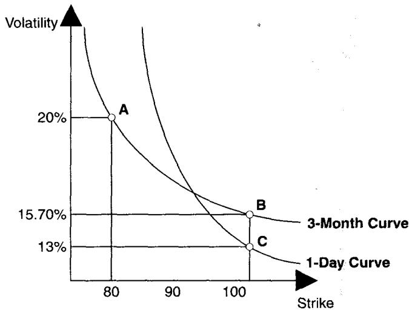
图 1.5 的 smile 曲线显示：同一 strike 在不同期限上的波动率差异，会让 parity 等价在美式提前行权环境下变得复杂。可行权那条腿的"有效到期"被提前行权拉短，于是它落在曲面上不同的点。
硬美式期权通常比同到期欧式期权更值钱，因为它内含一个关于利率或波动率的复合期权。利率的水平与波动率、carry 波动率、以及"波动率的波动率"（vvol）越高，这个差值越大。
Taleb 的解释非常优美，也最值得记住：美式期权持有人每天都有权支付 carry 来把期权"延长"一天，并押注明天它可能不再适合行权。这使美式期权带有 extendible option（可展期期权） 的性质，它是写在利率/波动率上的复合期权。"没人会行权的美式期权"则是那些每日盯市的期货期权（如 LIFFE 产品），利润每天可取出生息，深度实值也不必提前行权。
十二、远期、期货与 forward-forward（进阶）
远期合约让双方有义务在指定日期按约定价格买卖资产，或按公式交换支付。期货是交易所上市的标准化远期，由清算所充当对手方，公开喊价、靠标准化与可替代性提升流动性。
盯市差异与 tailing
远期与期货的 hedge ratio 不同：远期在终点一次结算，期货有每日变动保证金（pay-as-you-go），盈方可立即拿现金生息。对长久期工具，这个差异不小。用期货对冲远期需要 tailing，调整"现值索取权与现金索取权"的差别：
其中 是到交割的年数， 是到交割的零息利率（每单位远期需要的期货数）。
DEM 期货案例：CME 3 个月 DEM/USD 期货报 0.70，90 天远期由套利也报 0.70。100 张期货（每张 125,000 DEM）面值 12,500,000 DEM，90 天利率 6%，则 ，等价远期金额 DEM。若期货立刻从 0.70 跳到 0.71，期货腿利润 125,000 美元立即到账；远期腿利润 126,900 美元却要等 90 天才能实现 mark-to-market。对交易员，差别不在小数点后几位，而在现金流时点、融资收益与保证金管理。
信用差异
远期与 OTC 互换消耗双边信用额度；期货通过交易所清算几乎消除对单一对手方的信用暴露。Taleb 用 Credit Sylvania 与 Banca Nazionale del Lavoro 的互换说明：若交易在多个 OTC 对手方之间辗转平仓，信用线与或有资产负债表会层层膨胀；若都在标准化交易所完成，大家最终都是平的。做市商的惯常做法是：自己主动发起交易（充当客户）时用交易所，被动给客户报价（充当做市商）时用远期/OTC，前者要流动性和标准化，后者要定制与报价利润。
盯市口径对比
| 项目 | Forward | Future |
|---|---|---|
| 盯市 | 机构自建、按约定 | 交易所官方结算价 |
| 变动保证金 | 无 | 每日 |
| 信用风险 | 取决于对手方 | 几乎没有，系统性而非单一机构 |
| 工具对冲口径 | Delta 是现值化的 | Delta 是 raw（未现值化） |
| 交易风险 | 离开流动期限后流动性骤降 | 流动性好但可交易"支柱"期限少 |
| 直接成本 | 较低 | 较高（佣金、清算、交易所费） |
| 间接成本 | 较高（买卖价差通常更宽） | 较低（价差更紧） |
| 融资敏感性 | 不敏感 | 对价格与融资利率的相关性敏感 |
Taleb 还点了 nonsynchronous mark-to-market 问题：一个做 USD-JPY 套利的人可能同时持 OTC 远期、新加坡 EuroYen 期货和美国 Eurodollar；银行在纽约时间 4:30 标记，而新加坡期货在他纽约开工前就已标记、Eurodollar 在纽约时间 3:00 标记。账面 P/L 永远无法准确反映组合的实时清算价值。
期货与融资的相关性 → 凸性调整
这是本节最该被我们的理论体系吸收的一条规则：
对每日盯市的期货，若融资利率 与期货价 正相关，期货相对远期呈凸性，应高于同到期远期；若负相关，则呈凹性，应低于远期。
直觉：正相关时，盈方在高利率环境下收到现金（再投资收益高），亏方在低利率环境下付现金（融资便宜），每日结算的现金流时点系统性地有利于多头，这种 convexity 必须被定价。这正是利率衍生品里著名的 futures-forward convexity adjustment（如 Eurodollar 期货相对 FRA 的凸性修正）的交易直觉版。Taleb 反复在讲的主题正是制度细节制造 convexity：保证金制度、现金流时点、融资相关性，都能让一个名义上"线性"的工具偏离线性。
Forward-forward
forward-forward 是在一个时期交换资产、并在稍后做反向交易。对准线性的固定收益工具，它是两个远期价的比：
由市场现有利率插值、解出 到 的盈亏平衡利率。Eurodollar 期货本质是 forward-forward 存款，且常常是"尾巴摇狗"，forward-forward 反过来决定现货/曲线定价。对期权而言，forward-forward 必须考虑时间的非线性（第 9 章展开）。
十三、核心风险管理：主要风险与次要风险
Taleb 把市场风险分为 primary（主要） 与 secondary（次要），但提醒这个区分有时反直觉：某些工具在"边缘风险"上比在主要敞口上更危险。主要风险构成 P/L 方差的大部分，应优先对冲；次要风险通常可以等到交易日末再处理。但这个分类随工具而变，不能机械套用，而且相关性类产品（如二选一期权）会破坏这种干净的分类。
按市场划分
| 市场 | 主要市场风险 | 次要市场风险 |
|---|---|---|
| 股票 | 标的股价、波动率 | 国内利率、股息、波动率期限结构 |
| 固定收益 | 利率、利率期限结构、波动率 | 高阶导数、定价公式风险、波动率期限结构、期限间协方差稳定性 |
| 外汇 | 汇率、波动率 | 各币种利率、波动率期限结构 |
| 商品 | 价格、波动率、价格期限结构 | 国内利率、仓储成本、波动率期限结构 |
Taleb 的关键判断：固定收益衍生品里，整条收益率曲线都是主要风险，因为任何付息证券都是不同到期零息债的简单加总（10 年期互换主要受 10 年利率影响，但也受 4 年利率影响，因为再投资）。股票里利率只是通过远期定价间接、次要地影响，他的比喻很 Taleb："对一个已确诊癌症的人，被动吸烟的健康风险无足轻重。"但在高利率波动的新兴市场外汇里，利差与期限结构会从次要上升为主要。
按工具划分的附加风险（作用于"最小可分解片段"SDF）
| 工具 | 附加主要风险 | 附加次要风险 |
|---|---|---|
| 障碍期权 | 利率期限结构、波动率期限结构、障碍处流动性 | Skew、波动率的波动率 |
| 亚式期权 | 利率期限结构、波动率期限结构、variance ratio | 模型风险、Skew |
| 回望期权 | 均值回复 | 波动率的波动率、反正弦律（arcsine law）、"driftwood" 效应 |
| 复合期权 | 波动率的波动率 | 均值回复 |
| 多资产期权 | 相关性度量、波动率的波动率（因而相关性） | —— |
Taleb 明确反对"通用风险管理理论"式的万能框架：没有两个工具完全相同，凡是想搞一套放之四海皆准理论的人迄今都失败了。交易员应先寻找工具间的共同构件，再识别各自的残余风险。
流动性：无法归类却最重要的风险
流动性是交易员公认的"隐形风险"（the invisible risk），是交易的一切来源和原因，应当永远放在风险经理脑后。
Taleb 拒绝把流动性塞进 primary/secondary 任何一格，因为它影响的是一切：能否按模型 delta 调仓、突发事件时 bid/offer 会不会消失、大额行权后能否替换被合成出来的虚值期权、障碍附近是否有足够深度、曲面标记究竟是真实可交易价还是系统平滑的产物。这也是全书最实务的底色：很多时候模型风险不在公式本身，而在你用公式假设了一个并不存在的市场。
十四、标准化例子与 numeraire
为隔离纯期权风险，Taleb 后文尽量使用一个"flat forward"的通用资产：把一切重标到一个 numeraire，使远期无论到期都等于现货的 100%。这等于先把 drift 和远期投影问题拿掉，集中分析 gamma、vega、theta、barrier、correlation 等纯期权风险；在简化导致失真处，再用真实可交易工具、并引入 drift 与 Girsanov 测度变换 把残余加回来。
这套处理对学院派读者非常亲切，它就是远期测度 / 重标 numeraire 的教学化用法。先在"零 drift"世界里理解期权的二阶结构，再用 change of measure 把真实利率、股息、carry 投影回来。Taleb 给出的分层学习路径是：(1) 先理解纯期权风险；(2) 再把真实工具的 residual risk 加回；(3) 必要时引入可交易工具、drift 与 Girsanov 变换。
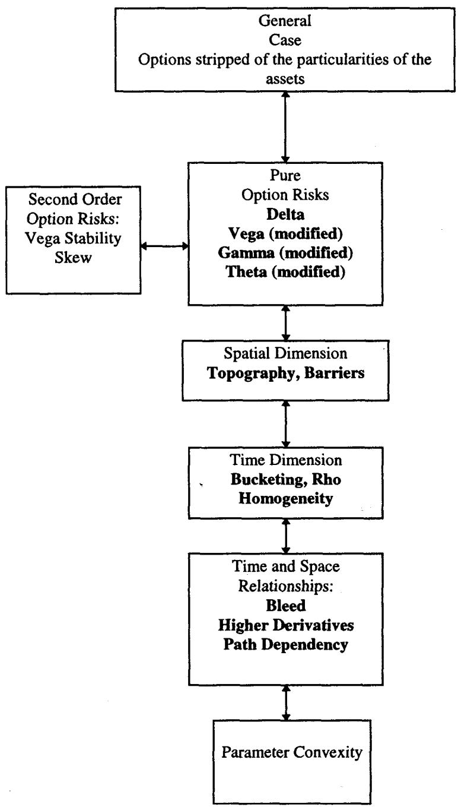
图 1.6 把期权风险拆成定义清楚的风险块：交易员不会一次性吞下整个复杂结构，而是先识别可交易、可对冲、可标记的风险维度。书的学习顺序也照此展开：先基础希腊字母（vega、gamma、theta），再到实务中人人都在用（无论是否自觉）的 modified delta / modified vega / modified theta / modified gamma。
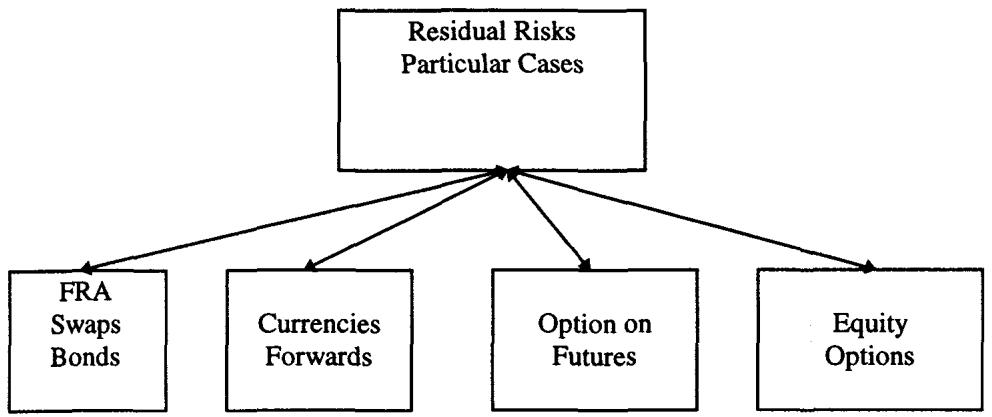
图 1.7 展示按工具组分解 residual risk 的方法：把复杂工具拆成 liquid traded segments，再逐段看残余风险。奇异期权的生成构件，即 bets（数字期权）、barriers、correlation，是全书最后的研究对象。
十五、把框架用到具体工具
Taleb 最后用互换与 index-amortizing swaps 演示框架如何落地。普通互换不过是由相关现金流片段构成的多资产工具，很多时候能完全拆成极其流动的 Eurodollar strips；有了多资产期权与"用相关性矩阵做 stacking"的技术，就足以把动态对冲原则迁移到互换。对 index-amortizing swaps，则可用美式数字期权 + 复合期权的知识来处理。
他批评许多固定收益交易员的通病：把知识局限在工具的细节里，而疏于去抓生成构件（generating blocks）。 相比整体式的 Heath-Jarrow-Morton（HJM）框架，他更偏好从可交易片段和期权构件出发，并直言这种方法"比 HJM 容易得多"。
这并不否定 HJM 的价值。Taleb 想说的是，交易台面对一张新结构时的第一反应应该是一串分解式提问：这个结构能拆成哪些 liquid strips？哪些部分是香草期权风险？哪些是 barrier / digital / compound / correlation？哪些残余风险根本无法可靠对冲？哪些风险会在压力场景下从 secondary 翻成 primary？
十六、本章综述：理论与实务的对照表
读完本章，最值得沉淀的是 Taleb 的"交易员法则"与我们熟悉的定价理论之间的一一对应。把它整理成一张表，便于日后回看：
| Taleb 的实务命题 | 对应的理论命题 |
|---|---|
| 非线性 ⇒ 价格依赖时间 | BSM PDE 中 |
| long gamma 要付 theta（租金） | |
| 污染原理：支付点向邻域扩散 | Feynman-Kac；BSM = 热传导方程；状态价格密度 |
| convexity 要收费 | Jensen 不等式：凸支付的期望增量 = 时间价值 |
| put/call 取决于 numeraire | change of numeraire / 外汇双测度对称 |
| 期权是"半个远期"、put-call parity | 静态复制、 |
| 同 strike 虚值 put 与实值 call 同波动率 | parity 推论 = 波动率曲面无套利约束 |
| 软/硬美式提前行权过滤规则 | 最优停时、自由边界变分不等式 |
| 硬美式 > 欧式，内含复合期权 | extendible / compound option on rates & vol |
| 期货-远期凸性（与融资相关性） | futures-forward convexity adjustment |
| 用 forward delta 而非 cash delta 对冲 | 远期测度下的对冲、tailing |
| 把工具拆成 liquid segments 再看残余 | spanning / 复制基底分解 |
Taleb 的六条核心观点
第一，分类要服务于对冲，而非套用目录。线性与非线性的区分，比工具叫什么名字更重要。
第二，非线性必然带来时间依赖。convexity、time value、time decay 是一体三面。
第三，put 和 call 的区别对用户重要，对动态对冲者没那么重要。strike、expiration、forward delta 和曲面位置才是抓手。
第四，复杂性本身不构成价值。市场长期流向简单，复杂产品要么表达真正不可替代的风险，要么只是高收费包装。
第五，风险管理从可分解构件开始。先把工具拆成 liquid traded segments，再识别 residual risk，并警惕压力下主次风险的反转。
第六，流动性不在多数模型里，却在每一笔交易里。它决定模型输出能否变成实际对冲。
面对一张新结构的操作清单
读完本章，遇到任意新结构，可依次自问：
- 它相对哪个参数是线性、凸、凹还是混合曲率？gamma 在哪里变号？
- 支付是否不对称？是否存在显性或隐性 strike？
- 它的价值是否被某个终值/障碍支付点"污染"？污染从哪来、扩散到哪？
- 能否用 call / put / forward / strips 做静态复制？
- 若不能静态复制，动态对冲的主要再平衡变量是什么？
- 我看到的 delta 是 spot delta 还是 forward delta？做 parity 前是否折算？
- put-call parity 的成立条件是否满足？是否被提前行权、pin risk、smile 或流动性破坏？
- 期货与远期的差异来自每日盯市、融资相关性还是信用？需要 tailing 吗？
- 哪些风险是 primary、哪些 secondary、哪些会在压力中反转？
- 退出与替换成本是否真实可交易，而非系统曲线上的一个标记？
一句话收束
从交易实务看，本章最该记住的一句：先别问产品叫什么，先问它在哪里有曲率、曲率如何随时间衰减、以及你能否在真实市场里复制这条曲线。 公式我们早已会写；本章补上的，是把公式变成头寸、再把头寸放回一个有摩擦、有缺口、会断流的真实市场的那层判断。